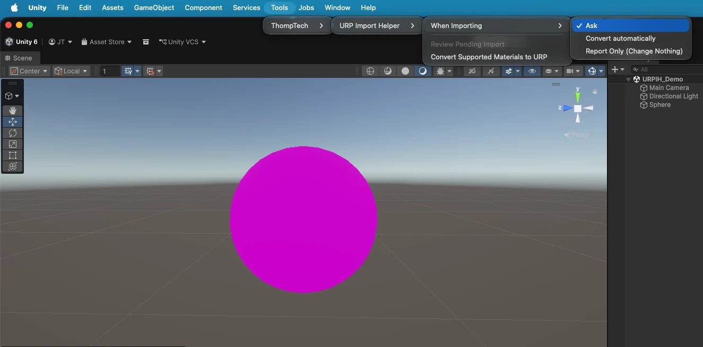
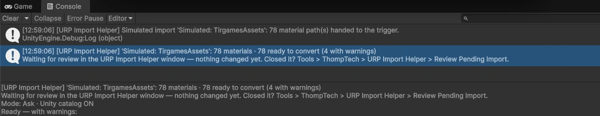
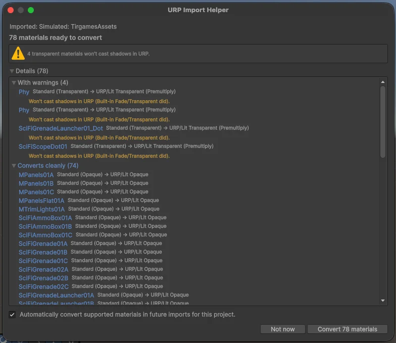
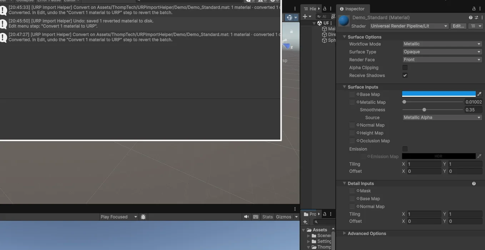
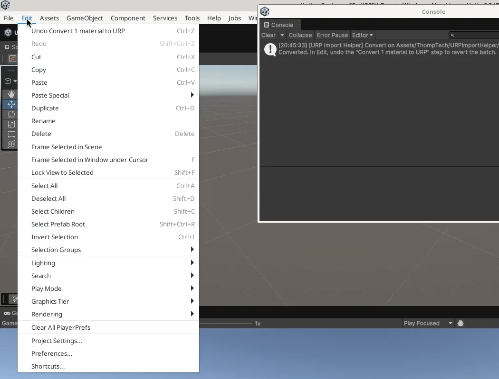

Free · MIT license

Features
Converts standalone .mat assets from Built-in Standard (metallic workflow) to URP/Lit, only when they pass the safety checks. Everything else is left unchanged and explained.
Ask, Convert automatically, or Report Only (Change Nothing). Saved per user, per project.
The Console report covers counts, warnings and next steps. Expand Details and click a row to ping that material in the Project window.
Select .mat files or folders and convert on demand, in every mode, without importing another package.
Each converted batch is one named Unity Edit > Undo step, such as Convert 6 materials to URP. Reverted files are saved for you.
On Unity 6+, analyze and convert through the Unity CLI or an MCP-capable AI agent. Not required for normal Editor use. Quick Start

ThompTech > URP Import Helper > When Importing menu showing Ask, Convert automatically and Report Only (Change Nothing)" loading="lazy">When Unity finishes importing a package, URP Import Helper checks the materials that came with it.

In Ask mode, a review window shows what will convert and what gets a warning. Choose Convert or Not now.

Supported materials become URP/Lit. The Console report lists what changed.

Each batch is one named Edit > Undo step. Undo and Redo save the affected materials for you.
